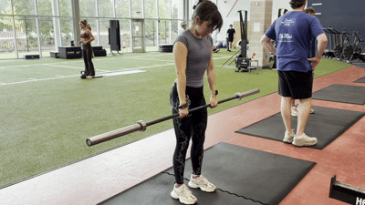
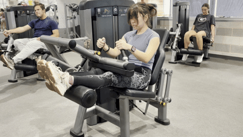
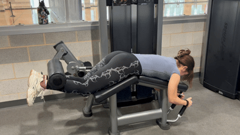

Stiff Leg Deadlifts
Equipment Needed

How To Do It
- Stand with your feet hip-width apart and the bar over your shoelaces.
- Hinge at the hips with only a slight knee bend and grasp the bar with a shoulder-width, double overhand grip.
- With a neutral spine, drive through your whole foot and extend your hips to stand up, keeping the bar close to your legs.
- Push your hips back and hinge forward, keeping your legs nearly straight, to lower the bar back to the floor.
- Reset your position before the next rep.
Seated Leg Curls
Equipment Needed

How To Do It
- Select the weight and adjust the pad so it rests just above the back of your heels.
- Tense your hamstrings to lift the weight slightly off the stack.
- Take a deep breath and curl the pad down and back as far as possible, keeping your spine neutral.
- Slowly return the weight to the starting position.
Lying Leg Curls
Equipment Needed

How To Do It
- Select the weight and adjust the pad so it rests just above the back of your heels.
- Tense your hamstrings to lift the weight slightly off the stack.
- Take a deep breath and curl the pad up and toward your back as far as possible, keeping your spine neutral.
- Slowly return the weight to the starting position.
← Back to legs muscles
 Muscle
Muscle